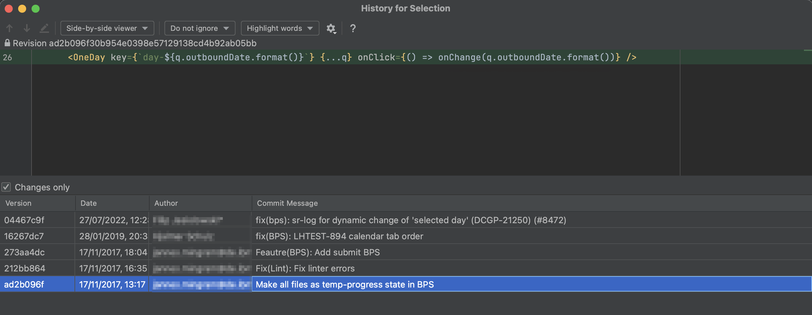

_Overthinking the code
(when eloquence kills readibility)


_Overthinking the code
(when eloquence kills readibility)
readability > efficiency
maintenance cost -> technical debt
overthinking is technical debt
the reason:

curry docs (lodash)
_Agenda:
- Why does it happen?
- The price of not stopping
- Getting over it :)
?
WHY
_Developers' adolescency

_CV driven development
_I want to learn something new
_I just learnt how to...
those who learn a new technology have a short term issue where it's "technology" driven solutions
_YAGNI
_flexing :)
!
bad practices considered ‘a way of working’
_lack of / improper code review

_dev team starting the journey
_project oriented guys part of a service
!
bad practices considered ‘a way of working’
_management doing micromanagement
_pato-agile: no time for refinement
_pato-agile: improper (under-) estimation
_focus on delivery without bearing in mind maintenance
_focusing on time-to-market
_outdated technology
!
bad practices considered ‘a way of working’
?
PRICE
_Illuminati - confirmed


!
GET OVER IT
_Overthinking the code
(when "eloquence" kills readibility)
!
"overthinking asdasdasdasdasdasd technical debt"
!
"overthinking asdasdasdasdasdasd technical debt"
!
"overthinking asdasdasdasdasdasd technical debt"
srutututu sekcja
_JNB.1
_One ID Travel Partners:
1 kaczka !- 'Edit' link hides profile